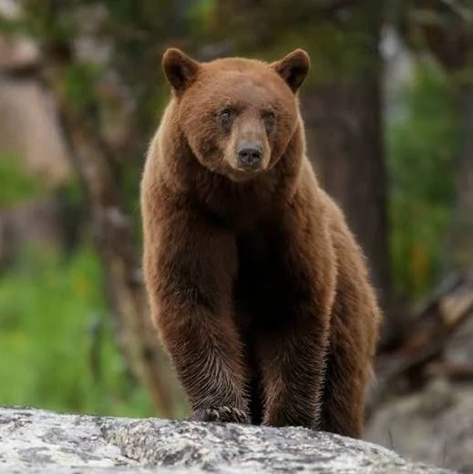

The brown bear (Ursus arctos) is a large bear native to Eurasia and North America. Of the land carnivorans, it is rivaled in size only by its closest relative, the polar bear, which is much less variable in size and slightly bigger on average.
Here are some bear species:
The following countries have the largest populations of brown bears:
